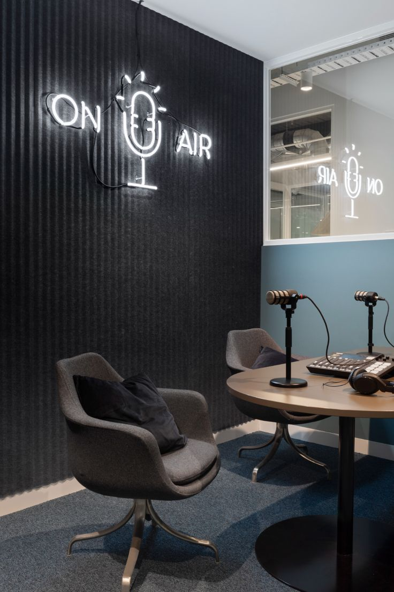

Discover, Listen, and Engage with Inspiring Podcasts

Uncover the World of Podcasts and Start Your Journey Today
Podcasts have become one of the most popular forms of media, providing entertainment, education, and inspiration in every corner of life.
Whether you’re interested in true crime, personal development, storytelling, or business insights, podcasts offer an accessible way to consume knowledge
and entertainment while on the go. With new episodes and shows emerging every day, there's a podcast for every interest, from seasoned podcasters
to fresh new voices.
Popular Podcast Categories
- True Crime
- Health and Wellness
- Technology and Innovation
- Business and Entrepreneurship
- Storytelling and Fiction
- Self-Improvement and Motivation
How to Start Your Own Podcast
Starting a podcast is easier than you think! Here’s a simple guide to get you started:
- Step 1: Choose Your Niche – Pick a topic you’re passionate about and think about your target audience.
- Step 2: Plan Your Episodes – Create an outline for your first few episodes to give structure to your podcast.
- Step 3: Invest in Quality Equipment – Good audio quality is essential, so invest in a microphone and headphones.
- Step 4: Record and Edit – Use software to record and edit your podcast to ensure it’s clear and engaging.
- Step 5: Publish and Promote – Use platforms like Spotify, Apple Podcasts, or your own website to share your episodes.
Where to Listen to Podcasts
Some of the most popular platforms to listen to podcasts are:
- Spotify
- Apple Podcasts
- Google Podcasts
- Stitcher
- Overcast
- iHeartRadio
Ready to dive into the world of podcasts? Start exploring today and let your ears take you on a new adventure!